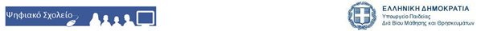
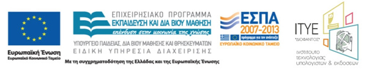

Το παρόν αναπτύχθηκε στο πλαίσιο του έργου
ΨΗΦΙΑΚΟ ΣΧΟΛΕΙΟ / «Προδιαγραφές Ψηφιακής Εκπαιδευτικής Πλατφόρμας, Ανάπτυξη και Λειτουργία Ψηφιακής Βάσης Γνώσης, Ψηφιακή Διαμόρφωση και Τεχνικός Μετασχολιασμός Εκπαιδευτικού Υλικού, Υποδομή για Υποδειγματικές Διδασκαλίες και Αξιοποίηση Συμμετοχικού Ιστού»,
του Ε.Π. «Εκπαίδευση και Δια Βίου Μάθηση»
του Υπουργείου Παιδείας Δια Βίου Μάθησης και Θρησκευμάτων (ΥΠΔΒΜΘ),
το οποίο συγχρηματοδοτείται από την Ευρωπαϊκή Ένωση (Ευρωπαϊκό Κοινωνικό Ταμείο) και το Ελληνικό Δημόσιο στα πλαίσια του ΕΣΠΑ και υλοποιείται από το
Ινστιτούτο Τεχνολογίας Υπολογιστών & Εκδόσεων «Διόφαντος» (ΙΤΥΕ).

Εμπλουτισμός Ψηφιακoύ Βιβλίου Μαθηματικών Α' Γυμνασίου |
|
Ομάδα ανάπτυξης |
Κεφ. Α1: Στέλιος Παπανδρέου - Μιχάλης Τζούμας Συντονιστής - Επιστημονικός Υπεύθυνος: Καθ. Χρόνης Κυνηγός |
Έκδοση/Ημερομηνία |
1.0 / Μάρτιος 2012 |
Οι δημιουργοί έχουν παραχωρήσει στο ΙΤΥΕ και το ΥΠΔΒΜΘ το δικαίωμα ελεύθερης χρήσης, αξιοποίησης και διάθεσης του υλικού με ηλεκτρονικά και έντυπα μέσα, στην Ελλάδα και στο Εξωτερικό και για απεριόριστο χρονικό διάστημα. Οι δημιουργοί εγγυώνται ότι το παρόν δεν προσβάλλει δικαιώματα τρίτων και δεν χρησιμοποιεί μελέτες ή προϊόντα τρίτων χωρίς νόμιμη άδεια αυτών. |
|